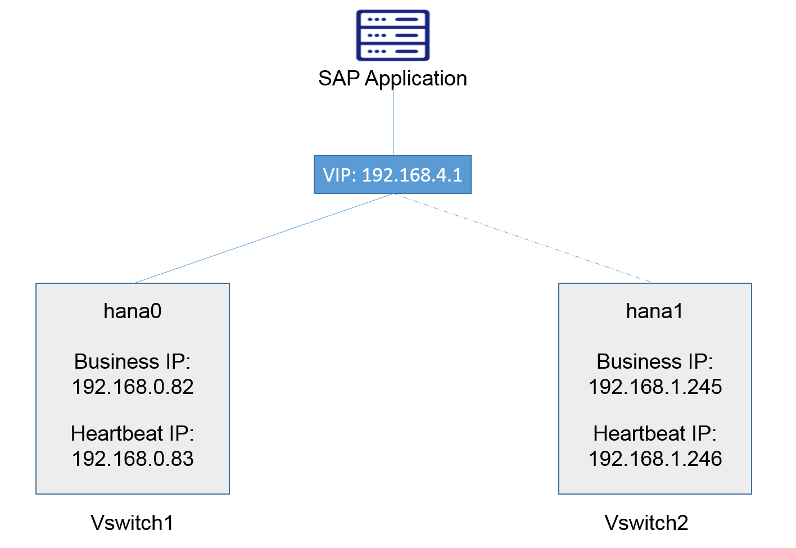

With SUSE Linux Enterprise Server for SAP Applications
Abstract
SUSE® Linux Enterprise Server for SAP Applications is optimized in various ways for SAP* applications. This document explains how to deploy an SAP HANA High Availability solution cross different Zones on Alibaba Cloud. It is based on SUSE Linux Enterprise Server for SAP Applications 12 SP2. The concept however can also be used with SUSE Linux Enterprise Server for SAP Applications 12 SP3 or newer.
Disclaimer: Documents published as part of the SUSE Best Practices series have been contributed voluntarily by SUSE employees and third parties. They are meant to serve as examples of how particular actions can be performed. They have been compiled with utmost attention to detail. However, this does not guarantee complete accuracy. SUSE cannot verify that actions described in these documents do what is claimed or whether actions described have unintended consequences. SUSE LLC, its affiliates, the authors, and the translators may not be held liable for possible errors or the consequences thereof.
Table of Contents
SAP HANA provides a feature called System Replication which is available in every SAP HANA installation. It offers an inherent disaster recovery support.
For details, refer to the SAP Help Portal, HANA system replication:
The SUSE High Availability Extension is a high availability solution based on Corosync and Pacemaker. With SUSE Linux Enterprise Server for SAP Applications, SUSE provides SAP specific Resource Agents (SAPHana, SAPHanaTopology etc.) used by Pacemaker. This helps you to build your SAP HANA HA solution up more effectively.
For details, refer to the latest version of the document SAP HANA SR Performance Optimized Scenario at the SUSE documentation Web page:
This document guides you on how to deploy an SAP HANA High Availability (HA) solution cross different Zones. The following list contains a brief architecture overview:
The High Availability Extension included with SUSE Linux Enterprise Server for SAP Applications is used to set up the HA Cluster;
SAP HANA System Replication is activated between the two HANA nodes;
Two HANA nodes are located in different Zones of the same Region;
The Alibaba Cloud Specific Virtual IP Resource Agent is used to allow Moving IP automatically switched to Active SAP HANA node; the Alibaba Cloud specific STONITH device is used for fencing.
Alibaba Cloud Architecture - Overview:
 |
Network Architecture - Overview:
|  |